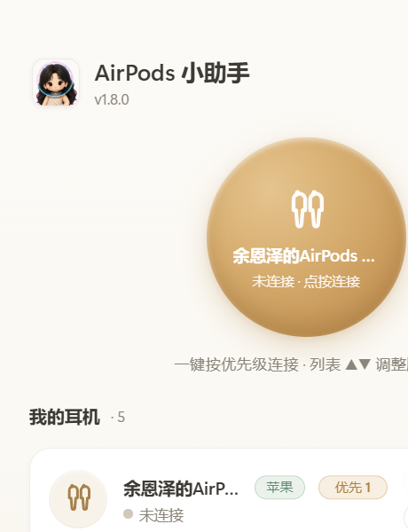

关于捞鱼 🐟
一个弱小但有梦想的开发者 · 捞鱼工作室

一起摸鱼聊技术
（奶茶也行）

超可爱快收藏
给 Windows 的一口甜：点一下，AirPods 就连上。
解压即用，无需安装 · 耳机配对过一次就行
iPhone 连 AirPods：开盖弹窗点一下。Windows：没有弹窗，每次都要翻设置。
| Windows 原生 | AirPods 小助手 | |
|---|---|---|
| 连接 | 设置 → 蓝牙 → 找设备 → 点连接（4~5 步） | 单击托盘图标 / 点一下大圆钮（1 步） |
| 多副耳机 | 每次自己找哪个是哪个 | 按你的优先级自动挑（▲▼ 排序） |
| 断开 | 再进设置点断开 | 右键托盘 → 一键断开全部 |
| 音质 | 容易连成低音质通话模式 | 默认 A2DP+HFP 完整模式 |
| 常驻 | 无 | 托盘常驻 + 开机自启 |
点一下托盘，星星布丁从右下角弹出来——桌面级透明，全帧动画。

3.4MB 单文件，零依赖零后台服务，不上传任何数据。
左键单击托盘直接切换；界面大圆钮一点即连。
苹果设备默认排前，其他耳机不捣乱，▲▼ 随心调序。
可爱脸=未连 · 心动脸+绿环=已连 · 加油脸+旋转弧=连接中。
奶油黄白+蜂蜜金，macOS 级克制质感，长名字优雅截断。
不联网上传任何数据，唯一网络行为是检查新版本。
有新版弹窗一键升级，日志全记在本地可审计。
三步上手：下载 → 解压双击 → 以后点一下就连。
⬇️ 免费下载 AirPodsBuddy一个弱小但有梦想的开发者 · 捞鱼工作室